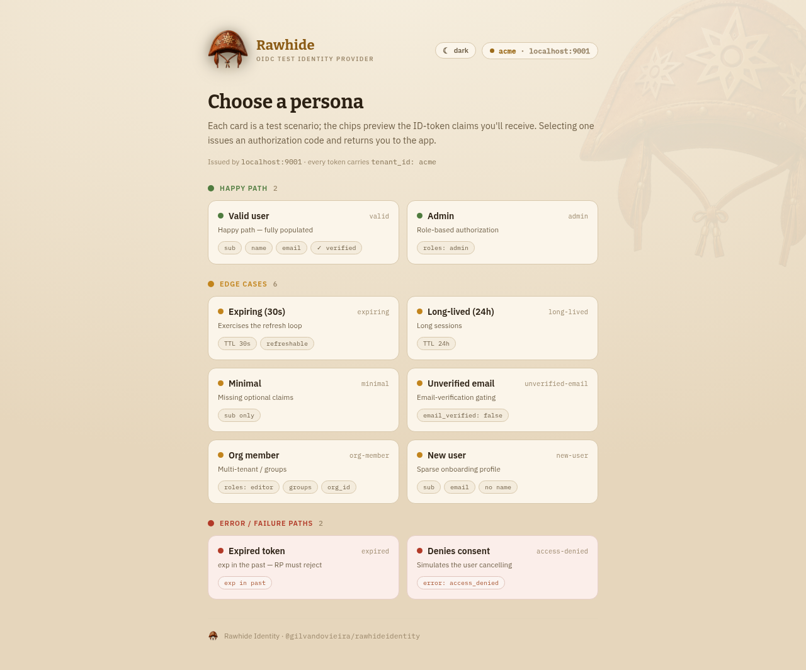
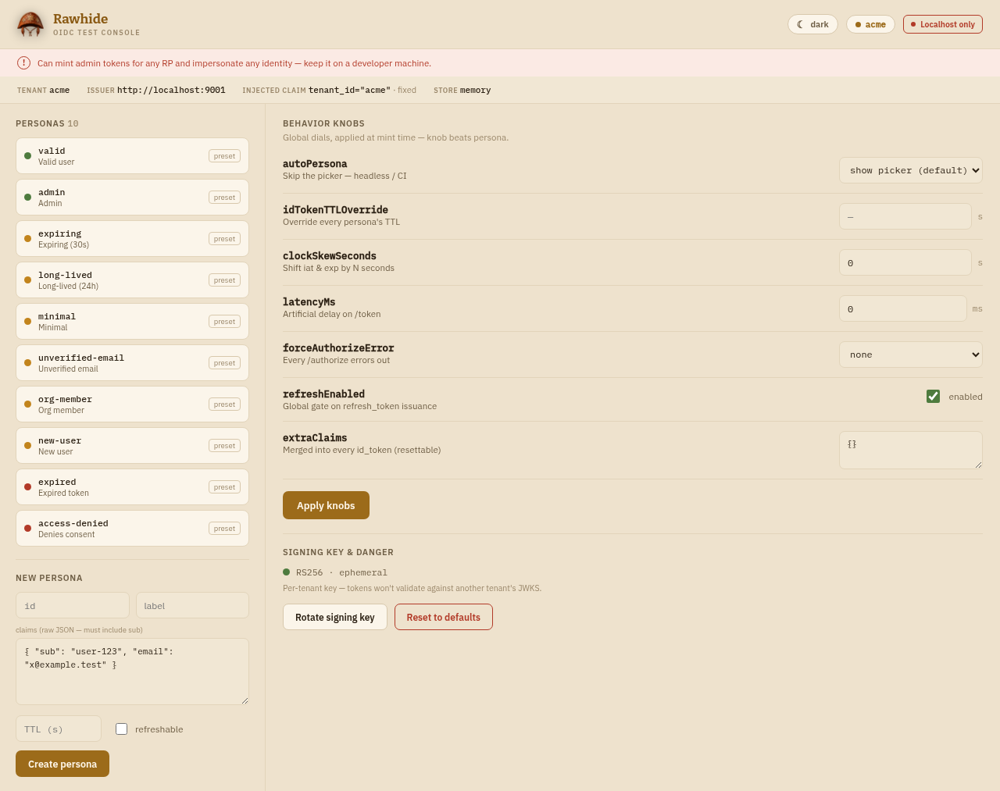
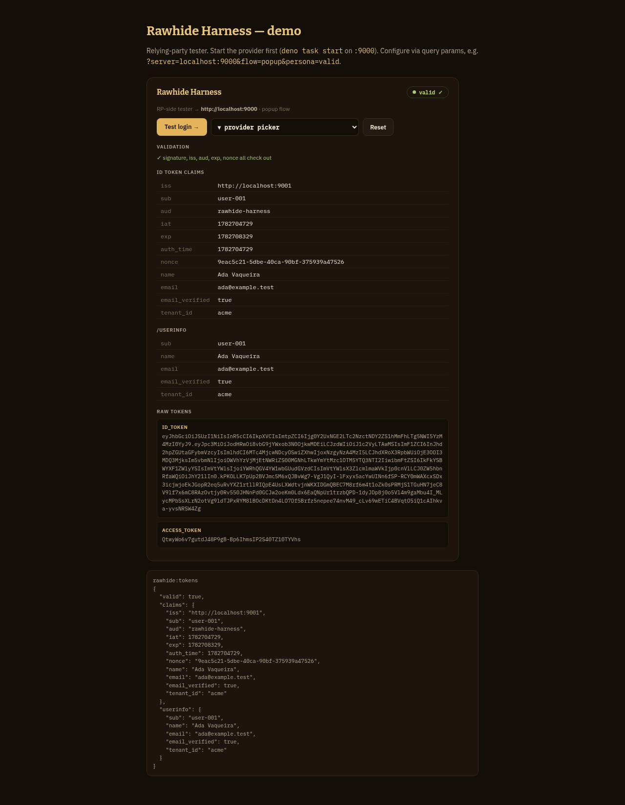

A drop-in OIDC provider for local dev and integration tests. Pick a scenario persona, get conformant RS256 / PKCE tokens, and let your relying party run its genuine verification — no real IdP, no accounts, no secrets, no mocks.
# clone & run — no build step; discovery at /.well-known/openid-configuration git clone https://github.com/gilvandovieira/rawhide cd rawhide && deno task start # → http://localhost:9000
Point at a real IdP and it's slow, shared, and can't reproduce edge cases. Stub the token check and you've stopped testing the thing that breaks in production. Rawhide is the third option: a real provider you fully control, with every awkward scenario one click away.
Self-negotiating: the RP discovers everything from the issuer URL. No client registration, no
secrets, no seeded users. Point openid-client at it and the happy path just works.
22 presets — expired tokens, unverified email, multi-role, denied consent, login_required… Each one targets a thing your RP must handle, so failure modes become first-class tests.
Authorization Code + PKCE, RS256 id_tokens, a real rotatable JWKS. Your RP runs its actual
signature + iss/aud/exp/nonce checks — not a mock.
Flip clock skew, /token latency, forced authorize errors, TTL overrides, or run fully
headless for CI — live, without restarting or touching RP code.
The provider is the instrumented IdP; the harness is the instrumented client — exercise and inspect the whole flow before your app's login code even exists.
One real issuer per tenant, each with its own signing key — test issuer routing and cross-tenant rejection for real, not with a shared-key shortcut.
# from a clone (works today): deno task start --port 9000 # single instance deno task start --store memory # nothing persists deno task start --help # all flags # or a prebuilt binary — no Deno needed (github.com/gilvandovieira/rawhide/releases): ./rawhideidentity-x86_64-unknown-linux-gnu --port 9000
No build step — it runs straight from main.tsx.
Open /authorize for the picker, /console to author personas & flip knobs.
// panva openid-client v6 import * as oidc from "openid-client"; const config = await oidc.discovery( new URL("http://localhost:9000"), "my-app", // any client_id works undefined, undefined, { execute: [oidc.allowInsecureRequests] }, ); // …then the normal Authorization Code + PKCE dance.
openid-client enforces HTTPS by default; over
plain http://localhost opt in with allowInsecureRequests.
22 presets seed the store on first boot, grouped by what they exercise. Land on one with a click in the
picker, or skip straight to it with ?persona=<id> (or the autoPersona knob for CI).
Create your own in the console.
Two zero-JS server-rendered surfaces plus the harness inspector — all themeable with a one-click toggle.



Standard OIDC endpoints, plus a little glue for the harness. The JSON surface sends permissive CORS so a browser-based client on another origin can drive the whole flow.
| Method | Path | Purpose |
|---|---|---|
| GET | /.well-known/openid-configuration | Discovery metadata |
| GET | /jwks | Public RS256 signing keys |
| GET | /authorize | Persona picker → issues an auth code (&persona=<id> skips the picker) |
| POST | /token | authorization_code (PKCE) and refresh_token grants |
| GET | /userinfo | Claims for a Bearer access token |
| GET | /personas | Machine-readable persona list (for the harness) |
| GET | /relay | postMessage relay for the harness popup flow |
| · | /console, /console/* | Control console (gate off with CONSOLE=off) |
<rawhide-harness> is a drop-in Web Component — vanilla, zero dependencies. It runs a
real Authorization Code + PKCE flow against the provider, verifies the tokens (RS256 against JWKS +
iss/aud/exp/nonce), and renders an inspector.
rawhide:tokens & rawhide:error DOM eventsheadless mode for events-only / automated tests<!-- drop it anywhere; bundle is published to GitHub Releases --> <rawhide-harness server="localhost:9000"> </rawhide-harness> <script type="module" src="https://github.com/gilvandovieira/rawhide/releases/latest/download/rawhide-harness.min.js"> </script> // react to the result addEventListener("rawhide:tokens", (e) => { console.log(e.detail.valid, e.detail.claims); });
Simulate a per-tenant-issuer SaaS by running one instance per tenant — each an independent issuer with its
own iss, JWKS, and signing key. --tenant also injects a tenant_id claim
and namespaces the store.
deno task start --tenant acme --port 9001 # iss = http://localhost:9001 deno task start --tenant globex --port 9002 # iss = http://localhost:9002
:9001 and assert your
app accepts it in the acme context but rejects it for globex. Because each instance signs with a
different key, that rejection is genuine even if your issuer-routing has a hole — a shared-key mock would
pass and hide the bug.